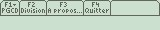

Vous avez lu l'excellent tutoriel de Lanfeust 313 sur le Ti-Basic, mais vous possédez une TI 89, 92 ou Voyage 200. Cependant, un point n'y a pas été abordé : les barres de menus. C'est dans ce but que je vous propose de faire rapidement le tour du sujet. En gros : à quoi ça ressemble, à quoi ça sert et comment en réaliser une facilement ?
À l'instar d'une barre de menus sous Word par exemple, avec ses menus "Fichier", "Edition"... En fait, une barre de menus sous TI, c'est très ressemblant :

(ici un extrait d'un petit programme sur le PGCD et les divisions euclidiennes)
On observe bien la ressemblance, mis à part le fait que sur la TI, il n'y a pas de souris : tout se fait avec les touches. En ce qui concerne la barre de menus, on y naviguera avec les touches F1 - F8.
Et ma barre de menus, elle me sert à quoi ? Est-elle vraiment utile ?
En fait, tout dépend du programme et de l'utilisation que l'on veut en faire. Comme l'a fait remarqué Binabik avec les DropDown dans les boîtes de dialogue (qu'il remplace astucieusement par des prompt), on pourrait très bien remplacer les barres de menus par le même procédé, ce qui donnerait un look à la TI 83... Bref, si déjà on dispose d'une calculatrice dotée d'un écran de bonne résolution, autant en tirer le maximum et soigner la présentation ! :D
Voilà, maintenant que vous êtes à peu près au point sur les barres de menus, on va passer à la réalisation.
On commence tout de suite avec la syntaxe principale de la barre de menu :
calcul()
Prgm
ClrIO
Toolbar
Title "PGCD"
Item "Resultat",re
Item "Le détail",de
Title "Quitter",qt
EndTBar
//suite du programme
EndPrgm
Explication du code :
Au début, c'est normal : le nom du programme, baptisé calcul pour l'occasion, les instructions de début de programme (Prgm) et l'effacement de l'écran (ClrIO, qui se traduit en français par EffES). Ensuite, on attaque directement la barre de menu :
on annonce la barre en ouvrant le bloc de la barre avec "Toolbar", qui signifie en anglais barre d'outils ;
le premier "Title" est le titre du premier menu ;
les "Item" sont les sous-menus, comme le sont "Enregistrer" ou "Imprimer", dans le menu fichier de Word ;
on enchaîne avec un deuxième menu appelé "Quitter", qui va permettre (dans ce cas en appuyant sur F2) de quitter le programme.
Et tes re, de, qt après les items et les titres, ça sert à quoi ?
Séparés par des virgules des données visibles par l'utilisateur (celles-ci sont données entre guillemets), ces instructions de deux lettres (il pourrait y en avoir une seule ou plus, mais évitez tout de même de mettre des mots entiers) sont des noms d'étiquettes (labels en anglais, Lbl en Ti-Basic) qui serviront lorsque vous voudrez donner les instruction relatives au menu concerné. Un exemple pour bien comprendre :
nom()
Prgm //début du programme
Toolbar //instructions pour des menus
Title "Quitter",qt
EndTBar
//plein de code !
Lbl qt //c'est l'étiquette qt.
//instructions pour quitter le programme
EndPrgm
Ainsi, lorsque l'on valide le choix "quitter" dans la barre de menus, c'est un peu comme si l'on avait fait un Goto vers l'étiquette qt.
Allez, à présent vous devriez être capables d'élaborer le programme (avec une barre de menus) annoncé au début de la partie. Un petit conseil cependant : mettez l'étiquette "debut" par exemple avec l'annonce du bloc Toolbar / EndTBar pour pouvoir revenir à la barre de menus à tout moment du programme.
Correction
La cloche a sonné, c'est l'heure de la correction (après ramassage des copies bien entendu !).
Je vous propose le code suivant (j'espère qu'il est suffisamment commenté) :
geom()
Prgm
ClrIO
Lbl debut
Toolbar // début du bloc de la barre de menus
Title "Aire" // premier menu
Item "Carré",ca
Item "Rectangle",rec
Title "Périmètre"
Item "Carré",cap
Item "Rectangle",recp
Title "Quitter",qt
EndTBar
Lbl ca
ClrIO // pour effacer la barre de menus
Input "Coté",c // on demande la valeur du côté du carré
c*c->a // on calcule l'aire du c, la flèche est sur la touche "sto"
Disp "Aire =",a
Pause // pour pouvoir lire tranquillement la réponse (appuyer sur "enter" pour continuer)
Goto debut // retour au menu
// étiquettes suivantes (le principe est le même, il suffit de changer les calculs !!
Lbl qt // instructions pour quitter
ClrIO
DispHome
Stop
EndPrgm
Et voilà ! Ce n'était pas super difficile :) .
Bien sûr, ce code n'est pas parfait : on peut toujours l'améliorer. Dans ce cas, je propose surtout de retoucher un peu le "design", par exemple en ajoutant des boîtes de dialogue pour la saisie des données de départ et pour l'affichage des résultats. Enfin, en guise de conclusion, je vous conseille de lire la documentation du Ti-Basic, disponible à cette adresse (sur le site officiel des calculatrices Texas Instruments). Vous y trouverez la majeure partie des fonctions du Ti-Basic avec leur syntaxe.
Ce tutoriel est à présent terminé. J'espère que tout est clair. Le cas échéant, n'hésitez pas à m'envoyer un MP.